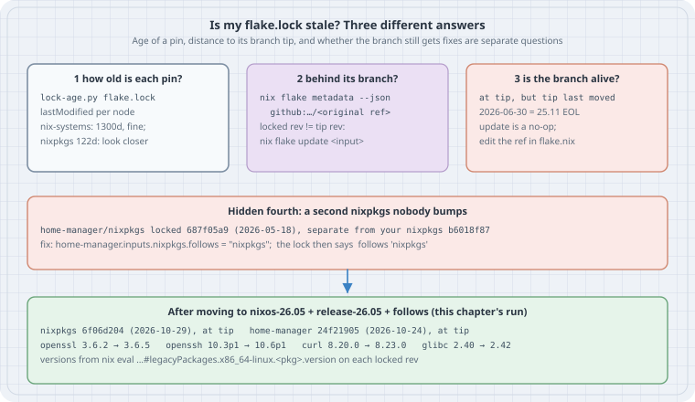
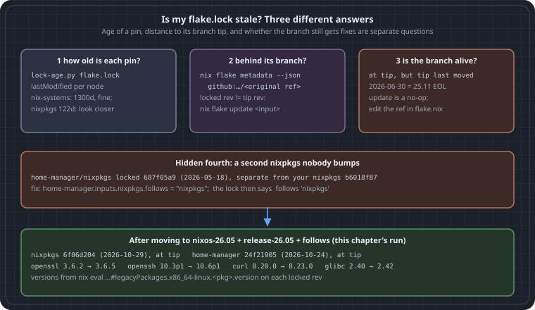

Is My flake.lock Stale? Lock Age, Branch Distance and End-of-Life Branches
Is My flake.lock Stale? Lock Age, Branch Distance and End-of-Life Branches
Goal: After a wave of CVEs, answer “is this host actually getting fixes?” from the repository alone, before you build anything. Read every pin in flake.lock with its date. Check whether each pin is behind the branch it tracks. Notice the case that nix flake update can never fix: a branch that has stopped moving. Find the second copy of nixpkgs that another input brought along.
The chapter before this one (15-read-an-update-before-switching, if your copy has it) covers what to do after you update: diff the closures and explain each change. This chapter covers the step before that: deciding whether there is anything to update, and which line to change.
All output below is genuine. It comes from Nix 2.35.3 on 2026-10-31, run against a small host flake. Nothing was built or activated; the commands only read lock files, resolve refs and evaluate package versions.


Thesis
“Stale” means three different things, and each has a different fix:
- The pin is old. Read
lastModifiedinflake.lock. Age is only a hint. Some inputs, such asnix-systems/default, never move, so a three-year-old pin is still correct. - The pin is behind its branch. The branch has newer commits than the lock.
nix flake update <input>fixes this. - The branch itself is dead. The lock sits exactly at the tip of
nixos-25.11, but that branch stopped receiving security fixes on 2026-06-30.nix flake updatesucceeds, prints nothing, and leaves you unpatched. The only fix is to edit the ref inflake.nix.
There is also a fourth problem that is easy to miss. If another input carries its own nixpkgs and you never added follows, then the lock holds a second nixpkgs that your updates do not touch.
The flake under test
This is a typical host flake as it looks four months after someone last edited it:
{
inputs = {
nixpkgs.url = "github:NixOS/nixpkgs/nixos-25.11";
home-manager.url = "github:nix-community/home-manager/release-25.11";
flake-utils.url = "github:numtide/flake-utils";
};
outputs = { self, ... }: { };
}nix flake lock wrote this lock (narHash query strings trimmed):
warning: creating lock file "/tmp/fl/host/flake.lock":
• Added input 'flake-utils':
'github:numtide/flake-utils/b7a79d3fea1e214f6d668d521cecec0c01e26544 (2026-10-13)
• Added input 'flake-utils/systems':
'github:nix-systems/default/da67096a3b9bf56a91d16901293e51ba5b49a27e (2023-04-09)
• Added input 'home-manager':
'github:nix-community/home-manager/3ee51fbdac8c8bdfe1e7e1fcaba6520a563f394f (2026-05-23)
• Added input 'home-manager/nixpkgs':
'github:NixOS/nixpkgs/687f05a9184cad4eaf905c48b63649e3a86f5433 (2026-05-18)
• Added input 'nixpkgs':
'github:NixOS/nixpkgs/b6018f87da91d19d0ab4cf979885689b469cdd41 (2026-06-30)There are already two nixpkgs revisions in that list.
Check 1: how old is each pin?
Every node in flake.lock has a locked attribute set holding rev and lastModified (Unix seconds). It also has an original set, which is what you wrote in flake.nix. An entry in a node’s inputs is either a node name or, for follows, a list path. This short script walks that graph from root, so nested inputs print as parent/child:
#!/usr/bin/env python3
"""lock-age.py: list every locked input in flake.lock with its commit date and age."""
import json, sys, time
from datetime import datetime, timezone
lock = json.load(open(sys.argv[1] if len(sys.argv) > 1 else "flake.lock"))
nodes, now = lock["nodes"], time.time()
def paths(node="root", prefix=""):
"""Walk the input graph so nested inputs print as parent/child."""
for name, ref in nodes[node].get("inputs", {}).items():
if isinstance(ref, list): # a 'follows': it reuses another node
yield prefix + name, None, "/".join(ref)
continue
yield prefix + name, ref, None
yield from paths(ref, prefix + name + "/")
print(f"{'input':28} {'source':28} {'rev':9} {'commit date':11} {'age':>5}")
for path, key, follows in paths():
if follows:
print(f"{path:28} follows {follows}"); continue
l = nodes[key]["locked"]
src = f"{l.get('owner', '')}/{l.get('repo', '')}" if l["type"] == "github" else l["type"]
when = datetime.fromtimestamp(l["lastModified"], timezone.utc)
age = int((now - l["lastModified"]) // 86400)
print(f"{path:28} {src:28} {l.get('rev', '')[:8]:9} {when:%Y-%m-%d} {age:>4}d")$ python3 lock-age.py
input source rev commit date age
flake-utils numtide/flake-utils b7a79d3f 2026-10-13 17d
flake-utils/systems nix-systems/default da67096a 2023-04-09 1300d
home-manager nix-community/home-manager 3ee51fbd 2026-05-23 160d
home-manager/nixpkgs NixOS/nixpkgs 687f05a9 2026-05-18 165d
nixpkgs NixOS/nixpkgs b6018f87 2026-06-30 122dHow to read it:
flake-utils/systemsat 1300 days is fine. That repository is a list of system names and has not needed a commit since 2023.nixpkgsat 122 days is worth a closer look. On a supported NixOS branch, the channel normally advances every few days.home-manager/nixpkgsis the fourth problem from the thesis. It is a separate nixpkgs, older than yours.
nix flake metadata prints the same tree with dates. The script is useful because its output is plain columns you can sort, diff, or run in CI across many repositories.
Check 2: is each pin behind its branch?
To know whether a newer commit exists, resolve each input’s original ref the way nix flake update would, and compare revisions. nix flake metadata --json <flakeref> does that resolution and changes nothing:
#!/usr/bin/env python3
"""lock-behind.py: for each direct input, compare the locked rev with what its
original ref (branch) resolves to today. Needs network; changes nothing."""
import json, subprocess, sys
from datetime import datetime, timezone
lock = json.load(open("flake.lock"))
nodes = lock["nodes"]
day = lambda t: datetime.fromtimestamp(t, timezone.utc).strftime("%Y-%m-%d")
for name, key in nodes["root"]["inputs"].items():
if isinstance(key, list):
continue # 'follows': nothing locked here
n = nodes[key]
o, l = n["original"], n["locked"]
if o["type"] != "github":
continue
url = f"github:{o['owner']}/{o['repo']}" + (f"/{o['ref']}" if "ref" in o else "")
tip = json.loads(subprocess.run(["nix", "flake", "metadata", "--json", url],
capture_output=True, text=True, check=True).stdout)
tip_rev, tip_t = tip["locked"]["rev"], tip["locked"]["lastModified"]
if tip_rev == l["rev"]:
verdict = f"at branch tip; branch last moved {day(tip_t)}"
else:
verdict = f"behind: tip {tip_rev[:8]} from {day(tip_t)}, {(tip_t - l['lastModified']) // 86400}d newer"
print(f"{name:13} {url:45} locked {l['rev'][:8]} ({day(l['lastModified'])}) {verdict}")To see the “behind” case, the lab rolled flake-utils back to an older commit with nix flake lock --override-input flake-utils github:numtide/flake-utils/c1dfcf08…. That command keeps original as the plain github:numtide/flake-utils, so the lock looks like one that simply has not been updated for two years:
$ python3 lock-behind.py
flake-utils github:numtide/flake-utils locked c1dfcf08 (2024-09-17) behind: tip b7a79d3f from 2026-10-13, 756d newer
home-manager github:nix-community/home-manager/release-25.11 locked 3ee51fbd (2026-05-23) at branch tip; branch last moved 2026-05-23
nixpkgs github:NixOS/nixpkgs/nixos-25.11 locked b6018f87 (2026-06-30) at branch tip; branch last moved 2026-06-30Updating only the input that is behind leaves every other pin alone. That keeps the change small and easy to review:
$ nix flake update flake-utils
warning: updating lock file "/tmp/fl/ovr/flake.lock":
• Updated input 'flake-utils':
'github:numtide/flake-utils/c1dfcf08411b08f6b8615f7d8971a2bfa81d5e8a (2024-09-17)
→ 'github:numtide/flake-utils/b7a79d3fea1e214f6d668d521cecec0c01e26544 (2026-10-13)One caveat: Nix caches branch resolution for tarball-ttl seconds (3600 by default). A check run straight after a lock can report “at tip” from the cache. Pass --refresh to nix flake metadata when the answer has to be current.
Check 3: is the branch still alive?
Look again at the nixpkgs line: at branch tip; branch last moved 2026-06-30. Nothing is behind, so the full update has nothing to do:
$ nix flake update
$ echo $?
0It exited 0, printed no lock changes and changed nothing. (In the lab’s uncommitted Git tree, Nix also printed its usual Git tree ... is dirty warning.) The date explains why. The NixOS 25.11 release announcement says the release gets fixes “for seven months (up until 2026-06-30)”. The 26.05 announcement says 25.11 “will reach its end-of-life and stop receiving security updates after 2026-06-30”. The lock is not out of date. It points at a branch that was retired.
The same is true of home-manager/release-25.11, which last moved on 2026-05-23.
A simple rule for CI: if an input’s ref is a NixOS release branch (nixos-YY.MM, nixpkgs-YY.MM, release-YY.MM) and the branch tip is more than about two weeks old, fail with “branch may be end-of-life”. Then check the release schedule. Two releases a year (May and November), each supported for seven months, leaves only about a month of overlap to move.
The fourth problem: a second nixpkgs
home-manager declares its own nixpkgs input. Without follows, the lock gives it a separate node, 687f05a9 from 2026-05-18. Anything home-manager builds from that copy keeps the older openssl, openssh and curl, however often you bump your top-level nixpkgs. follows makes it reuse yours.
The fix, and what it changes
Edit the refs, add follows, and lock again:
{
inputs = {
nixpkgs.url = "github:NixOS/nixpkgs/nixos-26.05";
home-manager.url = "github:nix-community/home-manager/release-26.05";
home-manager.inputs.nixpkgs.follows = "nixpkgs";
flake-utils.url = "github:numtide/flake-utils";
};
outputs = { self, ... }: { };
}$ nix flake lock
warning: updating lock file "/tmp/fl/host/flake.lock":
• Updated input 'home-manager':
'github:nix-community/home-manager/3ee51fbdac8c8bdfe1e7e1fcaba6520a563f394f (2026-05-23)
→ 'github:nix-community/home-manager/24f2190587513b9c2f73db112a17844ae912d965 (2026-10-24)
• Updated input 'home-manager/nixpkgs':
'github:NixOS/nixpkgs/687f05a9184cad4eaf905c48b63649e3a86f5433 (2026-05-18)
→ follows 'nixpkgs'
• Updated input 'nixpkgs':
'github:NixOS/nixpkgs/b6018f87da91d19d0ab4cf979885689b469cdd41 (2026-06-30)
→ 'github:NixOS/nixpkgs/6f06d204d8f2d8761d9da78778745974a3216381 (2026-10-29)
$ python3 lock-age.py
input source rev commit date age
flake-utils numtide/flake-utils b7a79d3f 2026-10-13 17d
flake-utils/systems nix-systems/default da67096a 2023-04-09 1300d
home-manager nix-community/home-manager 24f21905 2026-10-24 6d
home-manager/nixpkgs follows nixpkgs
nixpkgs NixOS/nixpkgs 6f06d204 2026-10-29 1d
$ python3 lock-behind.py
flake-utils github:numtide/flake-utils locked b7a79d3f (2026-10-13) at branch tip; branch last moved 2026-10-13
home-manager github:nix-community/home-manager/release-26.05 locked 24f21905 (2026-10-24) at branch tip; branch last moved 2026-10-24
nixpkgs github:NixOS/nixpkgs/nixos-26.05 locked 6f06d204 (2026-10-29) at branch tip; branch last moved 2026-10-29Does the new lock carry the fix?
An advisory names a fixed version. Evaluating one attribute on each locked revision answers “does this lock have it?” without building anything:
for r in 687f05a9184cad4eaf905c48b63649e3a86f5433 \
b6018f87da91d19d0ab4cf979885689b469cdd41 \
6f06d204d8f2d8761d9da78778745974a3216381; do
printf '%s ' ${r:0:8}
for p in openssl openssh glibc curl; do
printf '%s=%s ' $p "$(nix eval --raw github:NixOS/nixpkgs/$r#legacyPackages.x86_64-linux.$p.version)"
done; echo
done687f05a9 openssl=3.6.2 openssh=10.3p1 glibc=2.40 curl=8.19.0
b6018f87 openssl=3.6.2 openssh=10.3p1 glibc=2.40 curl=8.20.0
6f06d204 openssl=3.6.5 openssh=10.6p1 glibc=2.42 curl=8.23.0The first row is home-manager’s private nixpkgs, the second is the end-of-life 25.11 tip, and the third is 26.05 today. The private copy was a curl release behind even the dead branch.
A version string is a first check, not proof. nixpkgs often backports a fix as a patch without changing the version. For a specific CVE, check pkgs.<name>.patches or the package’s meta, or search the nixpkgs pull requests for the CVE id against the target branch.
Moving from 25.11 to 26.05 is a release upgrade, not a routine bump: the glibc version changes, and module options can be renamed. Read the 26.05 release notes. Then build and diff the closure before you switch, as in 15-read-an-update-before-switching.
Put it in CI
Both scripts only need python3, plus nix for the second one. They make no changes. A weekly job that runs them and fails on any of the following catches all four problems before a CVE wave does:
- any input reported
behindby more than N days; - any release-branch input whose tip has not moved in 14 days;
- more than one
NixOS/nixpkgssource inlock-age.pyoutput, unless it is intentional (for examplenixpkgs-unstablefor a few packages).
Treat an intentional second nixpkgs like any other input: it needs the same checks, and its own bump.
Pitfalls
- Ages from
lastModifiedare commit times, not lock times. A lock written today against a dead branch still shows the branch’s last commit date. That is exactly what makes check 1 useful. - Pinned revisions have no branch. If
flake.nixsaysgithub:NixOS/nixpkgs/<sha>,originalholds the sha. Check 2 will always say “at tip”, and only check 1 can flag it. --override-inputis not an update. It changes the lock whileoriginalkeeps the branch. That is handy for a lab or for rolling back, but a laternix flake updatemoves the input forward again.followscan break an input that needs a different nixpkgs than yours, for example a home-manager release that does not match your NixOS release. Keep the two on the same release:nixos-26.05withrelease-26.05.
Sources
- Nix manual,
nix flake: the lock file format (locked,original,inputs,follows), https://nix.dev/manual/nix/stable/command-ref/new-cli/nix3-flake.html - Nix manual,
nix flake update, including updating a single input: https://nix.dev/manual/nix/stable/command-ref/new-cli/nix3-flake-update.html - Nix manual,
nix flake metadata: https://nix.dev/manual/nix/stable/command-ref/new-cli/nix3-flake-metadata.html - Nix manual, the
tarball-ttlsetting: https://nix.dev/manual/nix/stable/command-ref/conf-file.html#conf-tarball-ttl - NixOS 25.11 release announcement (supported until 2026-06-30): https://nixos.org/blog/announcements/2025/nixos-2511/
- NixOS 26.05 release announcement (25.11 end of life, 26.05 supported until 2026-12-31): https://nixos.org/blog/announcements/2026/nixos-2605/